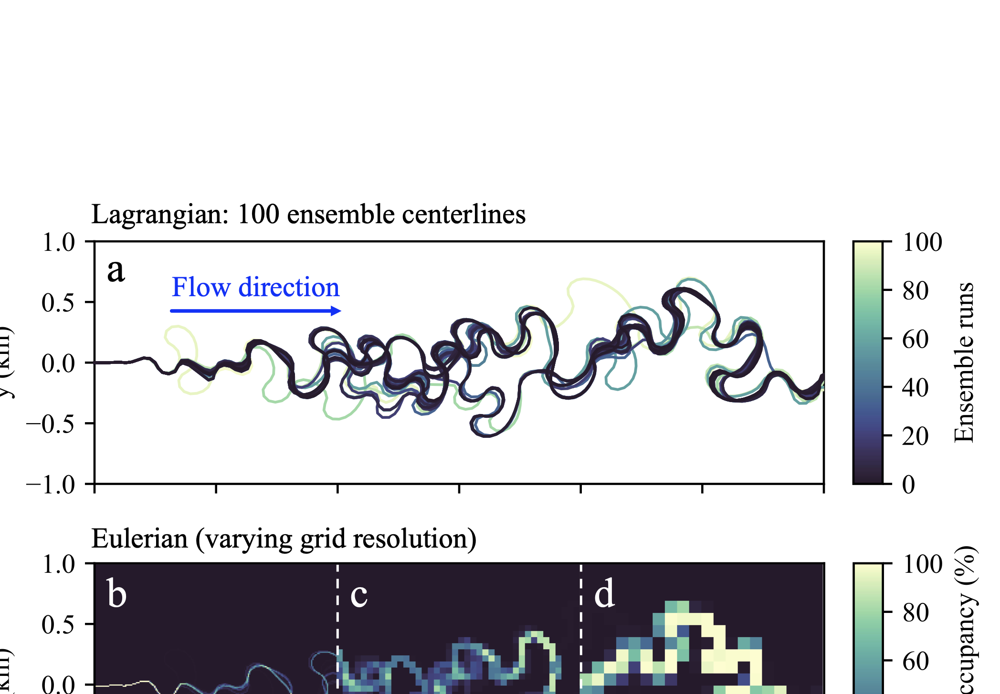

Rivers shape their floodplains through meander growth and cutoffs, which reorganize channel geometry. We demonstrate that cutoffs alone are sufficient to generate deterministic chaos in kinematic meander models, imposing a finite predictability horizon on planform evolution.
Lowland rivers are dynamic systems whose evolution is largely governed by the gradual growth of meander bends and episodic cutoff events that abruptly reshape channel geometry and reduce sinuosity. Cutoffs play a critical role in both local and nonlocal channel dynamics, accelerating bend migration and triggering reorganizations of the planform that extend well beyond the immediate cutoff reach. When cutoffs cluster or cascade along the channel, they can trigger additional nearby cutoffs, producing avalanching sequences of channel adjustments that resemble self-organized critical behavior.
Nonlinear interactions arising from cutoff events have been proposed as a driver of chaotic dynamics in meandering rivers, although conflicting studies report no definitive signatures of chaos. These inconsistencies underscore the need for controlled testing within a minimal deterministic framework to establish whether meandering and cutoff dynamics alone can act as a sufficient condition for chaos.
In chaotic systems, infinitesimal differences in initial conditions grow exponentially, measured by the Lyapunov exponent, leading to diminishing predictability and a finite forecast horizon for river migration. We investigate this question using meanderpy, a kinematic meander model in which lateral migration is governed by curvature. While natural rivers are influenced by sediment transport, bank strength, vegetation, and flow variability, we treat these as higher-order effects to isolate the intrinsic dynamics of the planform.
Kinematic models represent the channel as a migrating centerline whose nodes evolve according to curvature-driven migration laws. As bends grow, the channel lengthens and the total node count increases; as cutoffs remove segments, the channel shortens and the node count decreases. Consequently, the Lagrangian state vector is high-dimensional and its dimension changes in time, complicating direct comparisons between channel configurations.
Cutoffs intermittently reset local channel geometry. A neck cutoff is triggered when the minimum distance between nonadjacent channel segments falls below a critical threshold \(d_c\). The intervening loop is excised, the ends are reconnected, and the channel shortens, resetting local geometry. This topological event is the mechanism that, as we demonstrate, generates deterministic chaos.
A direct Lagrangian test of divergence is not possible, because node insertions, deletions, and cutoff events continually change the dimensionality of the Lagrangian state vector. We adopt the approach common in computational fluid dynamics: mapping the evolving Lagrangian planform onto a fixed Eulerian grid of \(M\) cells, assigning each cell a binary label indicating channel (1) or floodplain (0). The resulting binary field
\[\mathbf{g}(t) \in \{0, 1\}^M\]preserves planform geometry while providing a fixed-dimensional state suitable for direct comparison. Figure 1 illustrates this transformation.
Figure 1. Lagrangian and Eulerian representations of the meander model. (a) Lagrangian ensemble of 100 realizations, each initialized from a common planform and perturbed by a single-node transverse displacement. (b–d) Eulerian representation of the same state, evaluated on fixed grids spanning the full 6 km domain with spatial resolutions of 10 m, 50 m, and 100 m, respectively.
Each grid cell is classified as either channel (1) or floodplain (0), depending on whether the centerline intersects that cell. Panel (a) shows a Lagrangian ensemble at a given time; panels (b–d) show the same state evaluated on Eulerian grids with 10 m resolution (0–2 km), 50 m resolution (2–4 km), and 100 m resolution (4–6 km).
Within this fixed-dimensional Eulerian representation, we quantify sensitivity to initial conditions by adopting the notion of damage spreading from statistical physics. Two replicas of the system, identical except for a localized perturbation, are advanced in parallel, and their separation is measured by the Hamming distance:
\[d_H(t) = \|\mathbf{S}^*(t) - \mathbf{S}(t)\|_1\]where \(\mathbf{S}(t)\) and \(\mathbf{S}^*(t)\) are the binary channel-occupancy fields of the reference and perturbed trajectories, respectively. This distance counts the number of grid cells in which the two configurations differ and therefore captures geometric differences directly.
In discrete dynamical systems, exponential growth of this distance is a hallmark of deterministic chaos. The finite-time Lyapunov exponent (FTLE) quantifies the rate of separation over a finite interval and is estimated as:
\[\lambda_{\text{FT}} = (t_2 - t_1)^{-1} \ln\!\left[\frac{d_H(t_2)}{d_H(t_1)}\right]\]where \((t_1, t_2)\) spans the period of approximately exponential growth in \(d_H(t)\). A positive \(\lambda_{\text{FT}}\) indicates that small perturbations amplify exponentially, demonstrating sensitive dependence on initial conditions.
We begin with a controlled on–off experiment in which all parameters are identical except for the cutoff switch. Two trajectories are initialized from the same planform, with one perturbed transversely at a single interior node that is sufficiently small compared to both the nominal node spacing and the Eulerian grid resolution.
With cutoffs disabled, the two trajectories remain coincident on the Eulerian grid for the entire run, so the Hamming distance \(d_H(t)\) stays identically zero. The zero-separation behavior is invariant under grid refinement, as the occupancies coincide across all tested spatial resolutions.
In contrast, enabling cutoffs produces expanding red and blue regions that indicate a growing non-overlapping set of occupied cells and a strictly increasing \(d_H(t)\). Because only cutoff-enabled runs produce measurable and sustained separation, Lyapunov exponents are reported exclusively for those cases.
The following video provides a time-lapse rendering of the paired trajectories at the Eulerian grid resolution, demonstrating the exponential divergence driven by cutoff events:
Supplementary Video 1. Time-lapse of paired river trajectories on a fixed Eulerian grid. Purple marks cells occupied by both trajectories; red and blue mark cells unique to the reference and perturbed runs, respectively. Divergence initiates at cutoff events and propagates spatially.
The principal findings are as follows:
By Brayden Noh (Harvard, Dept. of Earth and Planetary Sciences) and Omar Wani (NYU Tandon School of Engineering).